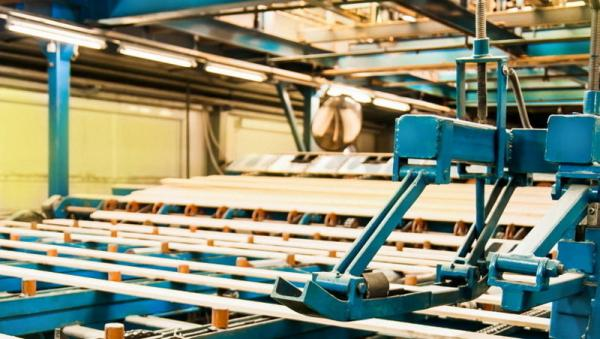

ЗАО “Лесозавод 25”
Крупнейший лесопильный комплекс на Северо-Западе России. Предприятие входит в группу компаний «Титан», объединяющую более 20 предприятий на территории Архангельской области и за ее пределами, основным направлением работы которых является профессиональная деятельность в сфере лесной промышленности. Предприятие специализируется на распиловке еловых и сосновых пород, а также на производстве топливных гранул (пеллет). В 2015 году завод вышел на показатель распила 1136 тыс. куб. м. Годовой объем выпуска пиломатериалов завода превышает 498 тыс. куб.м, из них 99% отправляется на экспорт. Годовой оборот предприятия составляет около 70 млн.евро.Экологическая политика
Предприятие активно стремится к минимизации вредного воздействия на окружающую среду путём постоянного улучшения используемых технологий. Подробнее
СМИ о нас
Новости

 Стали известны победители лесопромышленной премии Lesprom Awards-2017
Стали известны победители лесопромышленной премии Lesprom Awards-2017
Оргкомитет Всероссийской лесопромышленной премии Lesprom Awards объявил победителей 2017 года.
В номинации «Зеленая энергия» победу одержало ЗАО «Лесозавод 25» за проект запуска новой котельной на кородревесных отходах.

На третьем участке ЗАО «Лесозавод 25» начались пуско-наладочные испытания новой линии сортировки пиломатериалов
На третьем участке ЗАО «Лесозавод 25» (входит в ГК «Титан») началась пуско-наладка новой линии сортировки сухих пиломатериалов Springer Maschinenfabrik AG (Австрия), стоимость объекта составляет 570 млн руб.
 В реку Онега выпущено более 20 тысяч особей молодой форели
В реку Онега выпущено более 20 тысяч особей молодой форели
В течение октября этого года состоялся ряд мероприятий по выпуску в реку Онега молоди кумжи (форели), выращенной на Солзенском производственно-экспериментальном заводе Северного филиала ФГБУ «Главрыбвод».
Как сообщила министр АПК и торговли Архангельской области Ирина Бажанова, выпуск молодой форели в Онегу относится к разряду компенсационных мероприятий.
Их заказчиками выступили экологически ответственные предприятия региона: АО «Архангельский ЦБК», ЗАО «Лесозавод 25» и ООО «Севзапдорстрой».
22Стали известны победители лесопромышленной премии Lesprom Awards-2017
22Оргкомитет Всероссийской лесопромышленной премии Lesprom Awards объявил победителей 2017 года.
В номинации «Зеленая энергия» победу одержало ЗАО «Лесозавод 25» за проект запуска новой котельной на кородревесных отходах.
На третьем участке ЗАО «Лесозавод 25» начались пуско-наладочные испытания новой линии сортировки пиломатериалов
На третьем участке ЗАО «Лесозавод 25» (входит в ГК «Титан») началась пуско-наладка новой линии сортировки сухих пиломатериалов Springer Maschinenfabrik AG (Австрия), стоимость объекта составляет 570 млн руб.
В реку Онега выпущено более 20 тысяч особей молодой форели
В течение октября этого года состоялся ряд мероприятий по выпуску в реку Онега молоди кумжи (форели), выращенной на Солзенском производственно-экспериментальном заводе Северного филиала ФГБУ «Главрыбвод».
Как сообщила министр АПК и торговли Архангельской области Ирина Бажанова, выпуск молодой форели в Онегу относится к разряду компенсационных мероприятий.
Их заказчиками выступили экологически ответственные предприятия региона: АО «Архангельский ЦБК», ЗАО «Лесозавод 25» и ООО «Севзапдорстрой».